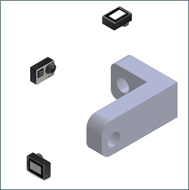

a) Las vistas
Los dibujos de una misma pieza que son representados en un plano, se llaman VISTAS, y dan a conocer la forma en que se ve dicha pieza, desde distintos puntos de vista; desde arriba, abajo o los lados. De una forma más simple, son como fotografías de la pieza de diferentes puntos de vista.
En la figura 1 se muestra el modo de obtención de las vistas a partir de una pieza, a través de la fotografía de la pieza en diferentes ángulos.

Fig. 1. Ejemplificación de obtención de vistas.